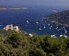

Les zones côtières, à l'interface terre-mer, abritent des milieux naturels extrêmement fragiles et des habitats essentiels, tant pour les espèces côtières que marines ; elles concentrent d''autre part une grande partie des ressources marines mondiales.
60% de la population mondiale vit à moins de 100 km des côtes ; s'y ajoutent les afflux touristiques saisonniers. Les activités économiques dépendant de la proximité de la côte sont nombreuses : agriculture, pêche, transport, tourisme. La pression sur le littoral est donc très forte et continue à augmenter. Pollution et tourisme comptent parmi les facteurs de dégradation les plus importants de ces milieux.
Pour préserver cet espace sous pression croissante, la gestion non coordonnée des différents secteurs d'activité (tourisme, pêche, transport ...) sur un même espace s'est vite avérée insuffisante et depuis plusieurs années s'est imposé le principe d'un processus visant à assurer une gestion concertée entre ces divers secteurs.
|  |
|
L'approche va tout d'abord être développée dans le cadre du programme Cap Ligures et notamment, en concertation avec les acteurs économiques du sanctuaire (pêcheurs, opérateurs touristiques, industriels, transporteurs maritimes…), pour ce qui concerne la réduction des facteurs directs et indirects de mortalité des cétacés : lutte contre la pollution, lutte contre certaines activités touristiques et contre les pratiques de pêche néfastes.
D'autres actions seront prochainement développées en Méditerranée de façon prioritaire et dans le cadre de programmes internationaux.
En outre, compte tenu de l'importance de la gestion des zones côtières dans le cadre de la protection des récifs coralliens, ce programme sera également développé dans les collectivités de l'outre-mer.
En effet, dans le cadre de l'ICRI (Initiative Internationale en faveur des récifs coralliens), Le WWF est engagé dans l'initiative française pour les récifs coralliens (IFRECOR). L'IFRECOR est une action nationale en faveur des récifs coralliens des collectivités de l'Outre-mer, engagée en mars 1999 sur décision du Premier Ministre. Elle est portée par les ministères chargés de l'environnement et de l'Outre-mer. Les enjeux sont la protection et la gestion durable des récifs coralliens des collectivités de l'Outre-mer. Le WWF est membre du comité national de l'IFRECOR et, en tant que tel, a participé à l'élaboration du plan national d'action pour les récifs des collectivités de l'outre-mer, validé en septembre 2000. Rappelons que la France est le seul pays au monde à posséder des récifs coralliens dans les 3 océans : océan pacifique (Nouvelle-Calédonie, Wallis et Futuna et Polynésie française), océan indien (la Réunion, Mayotte et les Iles Eparses) et océan atlantique (Martinique et Guadeloupe) ; ces contextes variés lui confèrent une diversité exceptionnelle. Par ailleurs, les récifs coralliens des collectivités couvrent près de 55.000 km2, soit près de 10%, en surface, des récifs mondiaux. Le WWF participera à la mise en œoeuvre du plan national.
Toutes ces dernières actions sur les récifs coralliens sont conjointement menées avec la mission DOM-TOM du WWF-France.